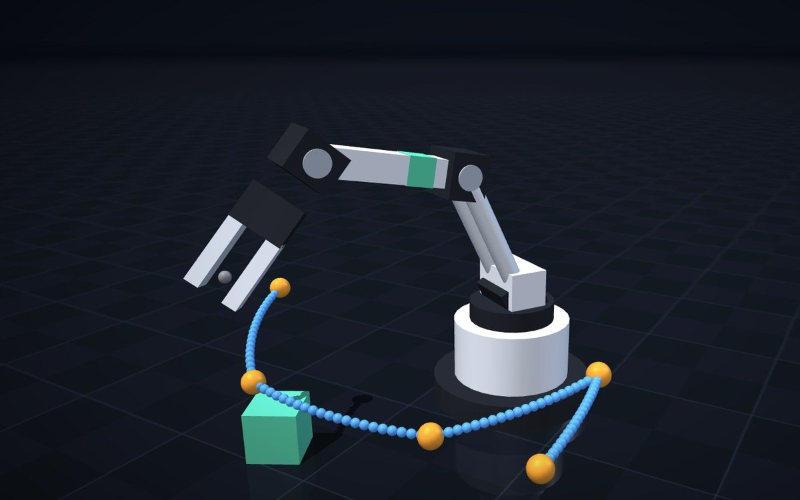

All projects
NexArm Teach-and-Playback Web UI
A browser teach pendant for a 5-DOF desktop arm: a standalone serial driver validated byte-for-byte against the manual, closed-form IK with zero round-trip errors over 3,000 poses, continuous and keyframe teaching with interpolated playback, and a full simulation mode.
Aug 2026
Robot tooling
FastAPI
WebSocket
IK

When
Aug 2026
Type
Robot tooling (hardware + web)
Stack
Python · FastAPI · WebSocket · vanilla JS
Status
Verified in simulation; partly on hardware
The Hiwonder NexArm is a 5-DOF desktop arm with a gripper, driven by HX-30HM bus servos. I wanted to use its teaching function from a browser, so I built a self-contained web app: a backend that owns the serial port and streams state over WebSocket, and a dependency-free three-pane UI for joint control, kinematics and teaching.
Results
20 / 20
manual example frames reproduced byte-for-byte
2,865 / 3,000
random poses solvable by IK, 0 with round-trip error > 1e-6
874 → 23
continuous-teaching samples simplified to keyframes
~45 Hz
serial loop, with 25 Hz WebSocket state push
Protocol & driver
- A standalone driver derived from Hiwonder's open-source lerobot-nexarm — FF FF ID LEN CMD … CHECK frames at 1 Mbps — covering the full standard command set and per-servo registers.
- Decoded an undocumented 24-byte broadcast frame that carries the end-effector pose and all six joint positions, and found two errors in the official manual (a version-reply length and the sign of a gripper example).
- Robust parsing: replies matched to the expected command, frame-length sanity checks, and a resident reader thread that caches the latest frame per command.
Kinematics
- Closed-form IK: step back from the tool point along the tool pitch to the wrist centre, then solve the planar two-link problem with the law of cosines (elbow-up and elbow-down). An auto-pitch scan prefers a downward-pointing tool and picks the solution nearest the current pose.
- Joint limits enforced in IK and on every command; link lengths and per-joint calibration are editable and saved to disk. The firmware's onboard IK is exposed alongside for comparison.
Teaching & playback
- Continuous teaching (torque off; a dead-band filter keeps a sample only when a joint moves ≥ 6 counts) and click-to-record keyframe teaching.
- Playback with per-joint linear interpolation, 0.1–5× speed and looping; trajectories saved as JSON and replayable from a list.
- On the real arm: firmware versions, 12.3 V battery, coordinate and joint readback, buzzer and gripper motion confirmed over USB-serial. Drag teaching and playback on hardware are the next things to validate.
Skills & Technologies
- Python
- FastAPI
- WebSocket
- pyserial
- Vanilla JS / SVG
- Inverse Kinematics
- Serial Protocols